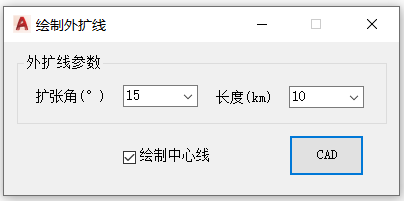

功能简介
【绘制外扩线】按给定的扩张角与长度，从选定的一点绘制向外扩张的边界线，常用于保护区边界的向外扩展作图，可选择是否同时绘制中心线。
界面预览

界面元素
| 分区 / 控件 | 说明 |
|---|---|
| 外扩线参数 · 扩张角(°) | 外扩线的张角，默认 15°。 |
| 外扩线参数 · 长度(km) | 外扩线的延伸长度，默认 10 km。 |
| 绘制中心线（复选框） | 勾选后在绘制外扩线的同时绘制中心线。 |
| CAD（按钮） | 按提示在图面拾取起点，绘制外扩线。 |
操作步骤
- 命令行输入
exline打开窗口。 - 在“外扩线参数”中设置扩张角(°)与长度(km)。
- 如需中心线，勾选【绘制中心线】。
- 点击【CAD】，按提示拾取起点完成绘制。
提示：外扩方向与拾取起点的走向相关，若结果方向相反，可重新拾取或调整参数。